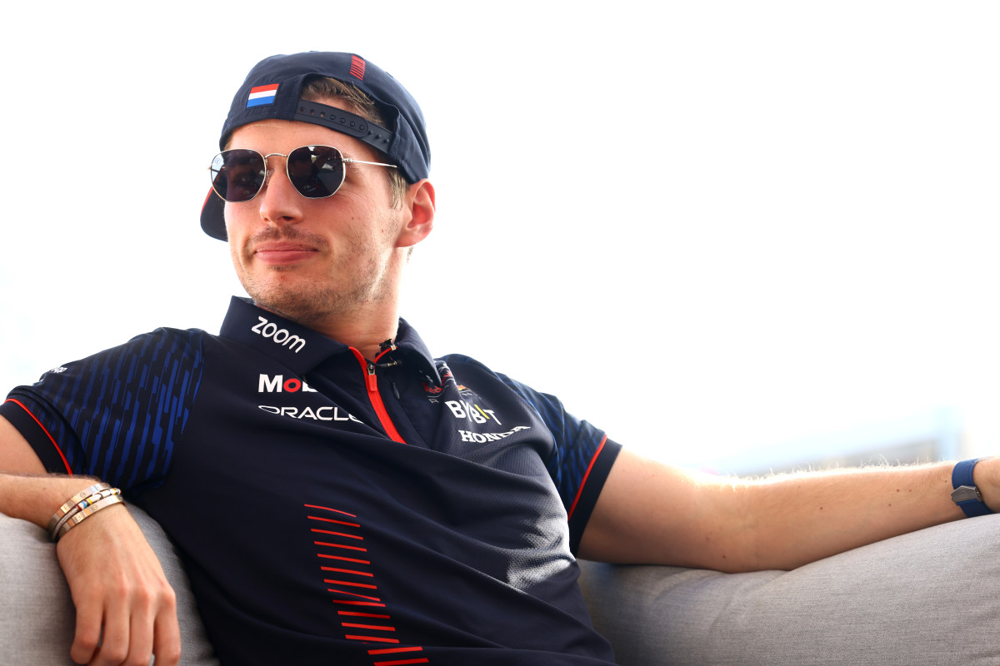

Education
Aston University (2023-)
- First year student
- Studying for a bachelor's degree in Cybersecurity
Solihull College (2021-2023)
- Studied for a BTEC National Extended Diploma in IT
- Graduated with D*D*D*
- Awarded two Outstanding Student awards
Work Experience
TJX Europe (2021-)
- Team Leader & Cash Office Associate
- Responsible for interfacing with back-office software to ensure buisness finaces are properly documented
- Investigates discrepancies, reviewing electronic journal logs
Skills
I have over 7 years of Java experience, primarily coding Minecraft plugins. Some projects include a remake of a classic HiveMC gamemode 'The Herobrine!' and solutions for the Advent of Code christmas event.
With 4 years of experience in C#, I have attempted a wide range of projects. This includes numerous mods for the virtual reality game Beat Saber, coursework for my GCSE qualification, and a recreational project called Bubbletill.
First learnt in 2021, I used Svelte to create many different websites for a wide range of purposes. For example, for my BTEC qualification I created a real estate website with Svelte. I also use Svelte for my own personal site, along with the recreational project, IsBorisG.one.

Interests & Hobbies
- I've played the Baritone Horn for over 10 years, currently at a grade 7.
- Played in multiple bands, such as Solihull Youth Wind Orchestra and Solihull Music Service's Jazz Matters.
- I enjoy watching cricket, supporting our local Warwickshire team. I also watch Formula 1, supporting Red Bull.
Professional Profiles
My LinkedIn
Member since 2022
Showcases all my professional experience and education

My GitHub
Member since 2018
Houses all my open source projects
Includes projects for my education and recreation